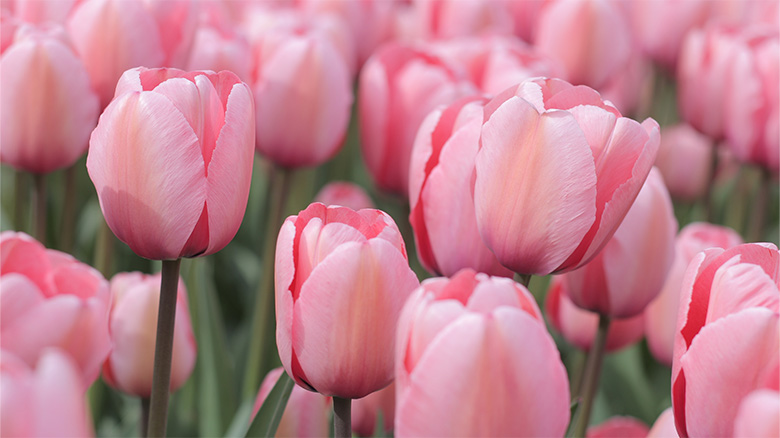
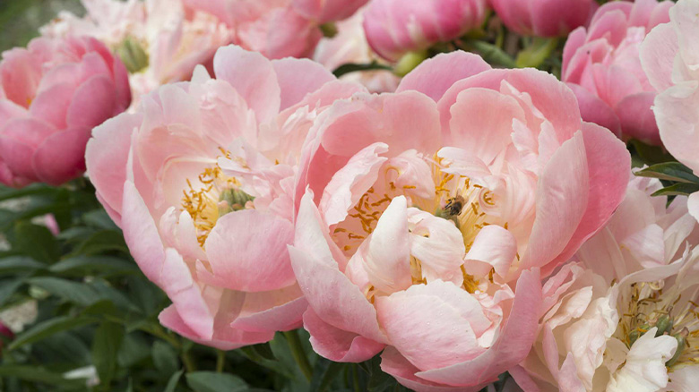
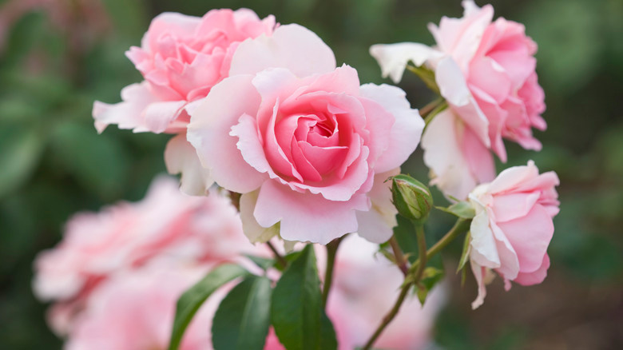
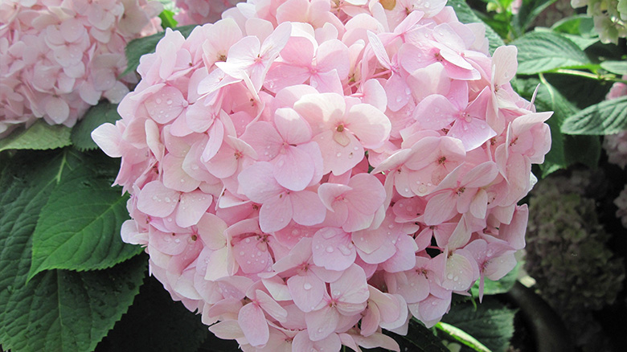
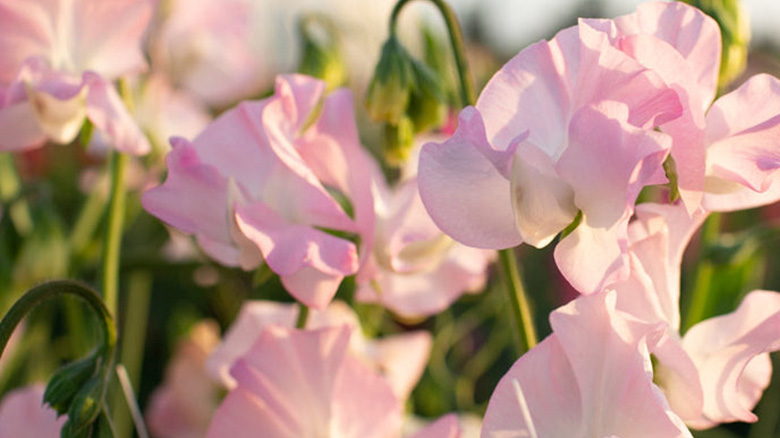
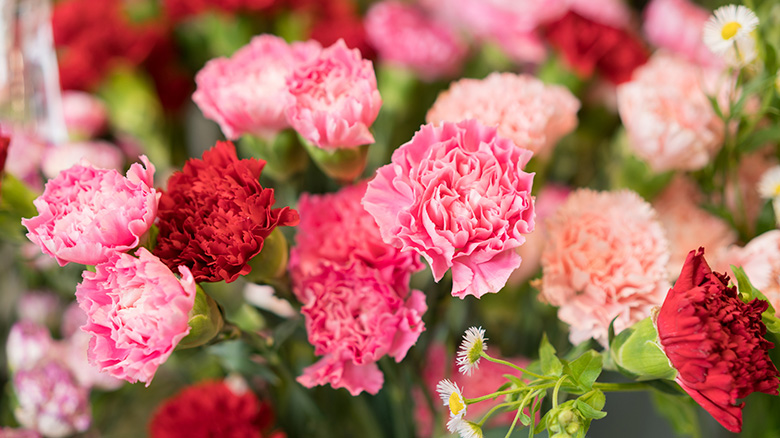

Number six: Tulips
Their cup-shaped blooms have a simple and clean appearance. Their upright stems also give them a distinct sape comepared to other flowers
I compared these six pink flowers based on their colors, petal shapes, and unique beauty to choose my favorites.
Bloom!The countdown
From delicate sweet peas to ruffled pink carnations, these six flowers stand out for their unique shapes, soft pink shades, and beautiful blooms.

Their cup-shaped blooms have a simple and clean appearance. Their upright stems also give them a distinct sape comepared to other flowers

Their numerous overlapping petals make them look especially full and fluffy. Their rounded shape gives them a soft and romantic appearance.

Their layered petals create a classic and recognizable flower shape. The pink shade gives them a softer look than the dark roses.

Their clusters of tiny flowers make each bloom look large and full. They are especially noticeable because of their round shape.

Their thin, curved petals give them a light and delicate appearance. They also have a natural, almost whimsical look.

The best one
Their ruffled petals give them a unique and detailed appearance. The soft pink color also makes them look delicate and elegant.
Behind the blooms
Every flower has its own charm. I ranked these six based on their appearance, petal shape, and the overall impression they create.
I ranked these flowers based on their petal shapes, shades of pink, and overall appearance. I gave higher rankings to flowers that looked especially unique, full, and eye-catching.
I didn't rank the flowers based on price, popularity, or how common they are in bouquets. I focused on their visual beauty and the qualities that make each flower stand out.
Everyone has different tastes, so not everyone will agree with my number one choice, pink carnations. Someone who prefers large, layered blooms might put peonies first instead.
These honorable mentions deserve recognition for their unique shapes, lovely shades of pink, and beautiful blooms.